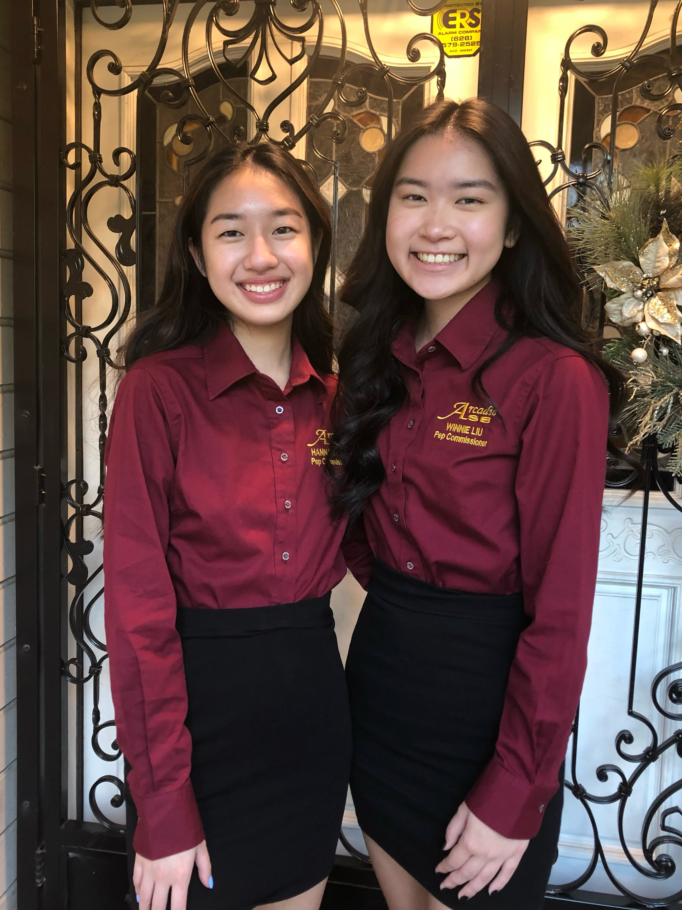

Winnie Liu
Hi! My name is Winnie and I'm currently a Pre-Business Major at the University of California, Riverside. I am interested in marketing and I would love to have the opportunity to work in an environment that would help me further develop my skills. I would highly appreciate the opportunity to contribute to the success of your team on future projects.
I strongly believe I can be an addition to your team with my strong attention to detail in the office. With my experience as a Medical Receptionist at the Garfield Medical Center, I gained skills in organizing sensitive information and communicating effectively with patients. While working as a Pep Commissioner on the Associated Student Body at Arcadia High School, I created fun and engaging content for Instagram and Facebook to garner student interest in attending our online assemblies hosted on YouTube. My efforts resulted in assemblies with over 3,000+ views on YouTube. This experience I gained through maintaining a social media presence would help me successfully implement my skills and abilities as a member of your team. Additionally, I have experience leading a team as a Blood Drive Leader for the American Red Cross. I was able to have the opportunity to host and organize a blood drive for my local community. Through the blood drive, I assisted people of all ages and ethnicities and accommodated donors to ensure the drive ran efficiently. The drive was a success and I was able to garner over 40 pints of blood.
Through my multiple professional experiences, I was able to gain a variety of different skills. I am proficent in using editing software such as Canva and iMovie and familiar on social media platforms such as Instagram, Facebook, Twitter, and Tiktok. I would love the opportunity to gain more experience in marketing positions and further showcase my abilities. Please feel free to contact me.
Experience
Medical Receptionist
• Received phone calls and provided information/assistance to patients
• Managed appointment scheduling, patient records, medical billing, and financial information
• Filed, photocopied, and scanned documents
• Efficiently multi-tasked office duties and communicating with patients
Blood Drive Leader
• Coordinated and hosted a blood drive for the Arcadia community
• Garnered 40 pints of blood for medical research
• Checked and accommodated the blood donors to ensure the event ran efficiently
• Assisted people of all ages and ethnicities
Pep Commissioner
• Communicated daily with school administration regarding plans for the student body
• Helped manage risk by participating in intensive discussion concerning school issues
• Created virtual and interactive events for the student body
• Created and promoted assemblies with flyers on Instagram and Facebook
Education
UC Riverside
Portfolio


.png)